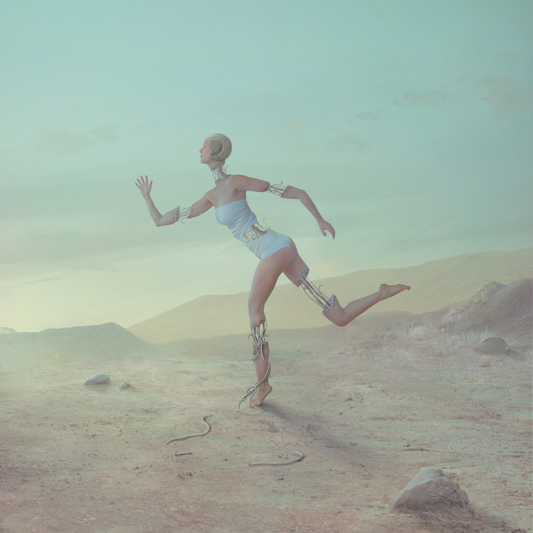

No Words
The power of silence, where the unspoken resonates with remarkable intensity. As speech proves inadequate, the absence of language becomes a refuge, allowing emotions to speak volumes in their purest form.
Captured symbolically at a toxic waste disposal site, this series reflects desolation and decay, embodying the darker aspects of our world. Yet, within these depths, a subtle flicker of hope persists, reminding us that even in challenging moments, resilience and renewal can be found.
We encounter the limitations of spoken words, dealing with the challenge of expressing deep feelings. During these times, we may resort to surface-level phrases or choose silence to protect our vulnerability. Yet, it is within this struggle that our authentic human nature emerges.
Through unspoken connections, where emotions linger, we uncover a rawness that transcends language.
In the absence of words, we find solace and inspiration.
